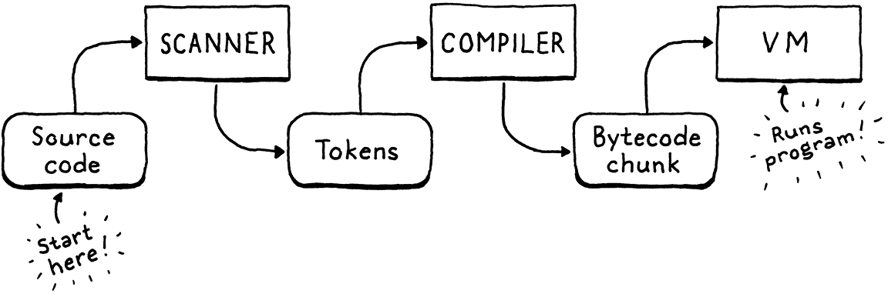
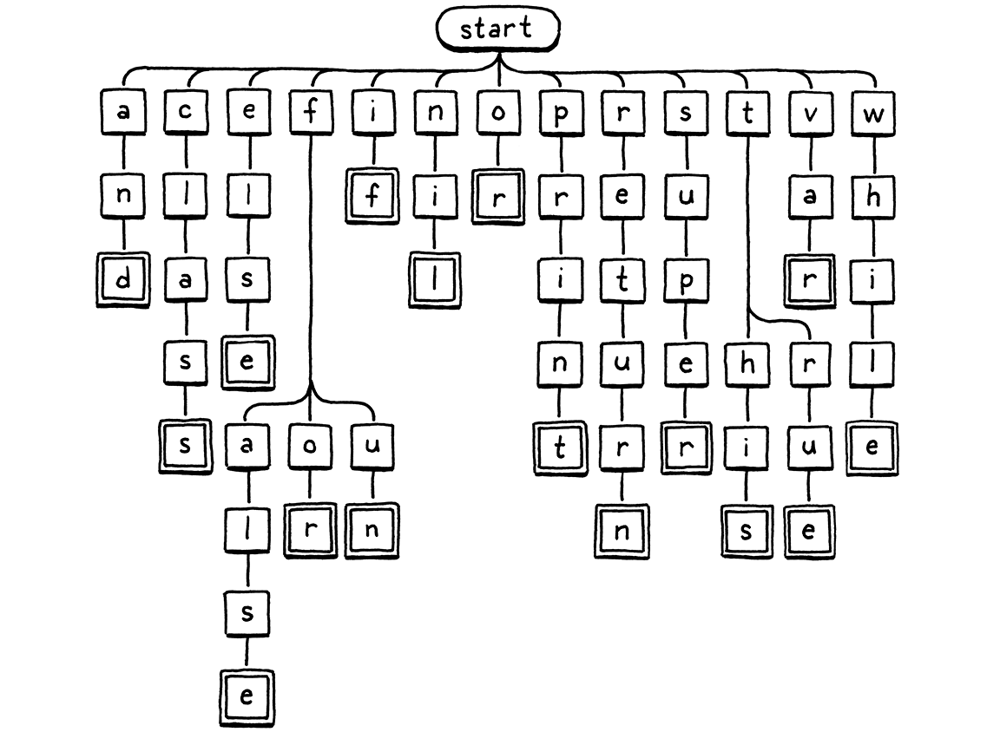
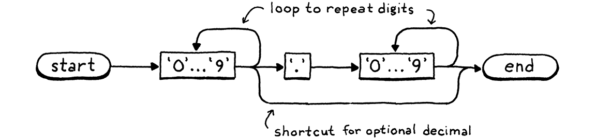

按需扫描
文学，不过是用二十六个音标符号、十个阿拉伯数字和大约八个标点，横排成行的、别具一格的组合。
库尔特·冯内古特，《与上帝握手：一场关于写作的对话》
我们的第二个解释器 clox 分三个阶段——扫描器、编译器和虚拟机。每两个阶段之间用一个数据结构相接。词法单元从扫描器流向编译器，字节码块从编译器流向虚拟机。我们是从这套实现接近末尾的地方起步的——先是字节码块，然后是虚拟机。现在，我们要跳回开头，搭一个能产出词法单元的扫描器。到了下一章，我们会用字节码编译器把这两头接上。

我承认，这不是全书最激动人心的一章。同一门语言有两套实现，难免会有些重复。不过跟 jlox 的扫描器相比，我确实偷偷塞进了几处有趣的差异。接着往下读，看看是什么。
16 . 1启动解释器
既然我们要搭前端了，就可以让 clox 像个真正的解释器那样跑起来。再不用手工编写字节码块了。是时候加上 REPL 和脚本加载了。把 main() 里的大部分代码拆掉，换成：
int main(int argc, const char* argv[]) {
initVM();
在 main() 内
替换 26 行
if (argc == 1) { repl(); } else if (argc == 2) { runFile(argv[1]); } else { fprintf(stderr, "Usage: clox [path]\n"); exit(64); } freeVM();
return 0; }
如果你运行可执行文件时不带参数，就会掉进 REPL 里。带一个命令行参数时，那个参数就被当作要运行的脚本路径。
我们需要几个系统头文件，那就先把它们一并解决掉。
加到文件开头
#include <stdio.h> #include <stdlib.h> #include <string.h>
#include "common.h"
接下来，把 REPL 支起来，让它 REPL 起来。
#include "vm.h"
static void repl() { char line[1024]; for (;;) { printf("> "); if (!fgets(line, sizeof(line), stdin)) { printf("\n"); break; } interpret(line); } }
一个像样的 REPL 会优雅地处理跨多行的输入，也不会把行长写死。而眼前这个 REPL 嘛——嗯——要寒酸一些，不过对我们来说够用了。
真正干活的是 interpret()。我们很快就会讲到它，但先来处理脚本加载。
加在 repl() 之后
static void runFile(const char* path) { char* source = readFile(path); InterpretResult result = interpret(source); free(source); if (result == INTERPRET_COMPILE_ERROR) exit(65); if (result == INTERPRET_RUNTIME_ERROR) exit(70); }
我们读取文件，然后执行读出来的那串 Lox 源代码。接着，根据执行结果恰当地设置退出码，因为我们是一丝不苟的工具制造者，就爱抠这种小细节。
我们还得释放那串源代码，因为 readFile() 是动态分配它的，并把所有权交给了调用者。那个函数长这样：
加在 repl() 之后
static char* readFile(const char* path) { FILE* file = fopen(path, "rb"); fseek(file, 0L, SEEK_END); size_t fileSize = ftell(file); rewind(file); char* buffer = (char*)malloc(fileSize + 1); size_t bytesRead = fread(buffer, sizeof(char), fileSize, file); buffer[bytesRead] = '\0'; fclose(file); return buffer; }
跟许多 C 代码一样，它花的力气比看上去该有的多，尤其考虑到 C 是一门专为操作系统设计的语言。麻烦的地方在于：我们想分配一个足够大的字符串来装下整个文件，可在读它之前，又不知道文件到底多大。
这里的代码就是解决这个问题的经典技巧。我们打开文件，但在读之前，先用 fseek() 寻到文件最末尾。然后调用 ftell()，它告诉我们当前距文件开头有多少字节。既然我们已经寻到了末尾（seek 的过去式到底该拼成 seeked 还是 sought？），那就是文件大小。我们倒回开头，分配一个那个大小的字符串，然后一次性把整个文件读进来。
这样就算完事了吧？还没有。这些函数调用跟 C 标准库里的多数调用一样，都可能失败。这要是 Java，失败会作为异常抛出，并自动展开调用栈，所以我们其实不必去处理它们。而在 C 里，不去检查，它们就被悄无声息地忽略了。
这不是一本讲良好 C 编程实践的书，可我也不愿助长坏风格，所以咱们还是把错误处理上。这对我们有好处，就像吃蔬菜、用牙线一样。
好在出了故障，我们也不用做什么特别机灵的事。要是没法正确读取用户的脚本，我们能做的也就是告诉用户，然后干净利落地退出解释器。首先，我们可能打不开文件。
FILE* file = fopen(path, "rb");
在 readFile() 内
if (file == NULL) { fprintf(stderr, "Could not open file \"%s\".\n", path); exit(74); }
fseek(file, 0L, SEEK_END);
文件不存在，或者用户没有访问权限，都会这样。这挺常见的——人们老是敲错路径。
这种失败则罕见得多：
char* buffer = (char*)malloc(fileSize + 1);
在 readFile() 内
if (buffer == NULL) { fprintf(stderr, "Not enough memory to read \"%s\".\n", path); exit(74); }
size_t bytesRead = fread(buffer, sizeof(char), fileSize, file);
要是连读 Lox 脚本所需的内存都分配不出来，那用户多半还有更大的麻烦要操心，不过我们至少该尽力让他们知道。
最后，读取本身也可能失败。
size_t bytesRead = fread(buffer, sizeof(char), fileSize, file);
在 readFile() 内
if (bytesRead < fileSize) { fprintf(stderr, "Could not read file \"%s\".\n", path); exit(74); }
buffer[bytesRead] = '\0';
这也不太可能。其实，对 fseek()、ftell() 和 rewind() 的调用理论上也可能失败，但咱们别钻得太深，行吗？
16 . 1 . 1打开编译流水线
现在我们手里有了一串 Lox 源代码，可以搭一条流水线来扫描、编译并执行它了。这条流水线由 interpret() 驱动。眼下，那个函数跑的还是以前那个写死的测试块。我们把它改成更接近最终形态的样子。
void freeVM();
在函数 interpret() 内
替换 1 行
InterpretResult interpret(const char* source);
void push(Value value);
以前我们传进去的是一个字节码块，现在传进去的是源代码字符串。下面是新的实现：
在函数 interpret() 内
替换 4 行
InterpretResult interpret(const char* source) { compile(source); return INTERPRET_OK;
}
这一章我们还不搭真正的编译器，但可以先把它的大致结构铺开。编译器就住在一个新模块里。
#include "common.h"
#include "compiler.h"
#include "debug.h"
目前，它里面就一个函数，声明如下：
新建文件
#ifndef clox_compiler_h #define clox_compiler_h void compile(const char* source); #endif
这个签名以后会变，但先够我们起步了。
编译的第一个阶段是扫描——也就是这一章我们在做的事——所以眼下编译器所做的，只是把它支起来。
新建文件
#include <stdio.h> #include "common.h" #include "compiler.h" #include "scanner.h" void compile(const char* source) { initScanner(source); }
当然，它到后面几章也会长大。
16 . 1 . 2扫描器开始扫描
在我们开始写真正有用的代码之前，还得再支起几尺高的脚手架。先是新头文件：
新建文件
#ifndef clox_scanner_h #define clox_scanner_h void initScanner(const char* source); #endif
以及它对应的实现：
新建文件
#include <stdio.h> #include <string.h> #include "common.h" #include "scanner.h" typedef struct { const char* start; const char* current; int line; } Scanner; Scanner scanner;
扫描器一路啃着用户的源代码，同时记录自己走到了哪儿。跟我们处理虚拟机时一样，我们把这些状态包进一个结构体，然后创建一个该类型的顶层模块变量，这样就不必在各种各样的函数之间把它传来传去了。
字段少得让人意外。start 指针标出当前正在扫描的词素的起点，current 指向眼下正在看的字符。
我们有一个 line 字段，用来跟踪当前词素在第几行，好做错误报告。就这些！我们甚至不保留指向源代码字符串开头的指针。扫描器把代码从头走一遍，走完就了事。
既然有了状态，就该初始化它。
加在变量 scanner 之后
void initScanner(const char* source) { scanner.start = source; scanner.current = source; scanner.line = 1; }
我们从第一行的第一个字符起步，就像蹲在起跑线上的赛跑选手。
16 . 2一次一个词法单元
在 jlox 里，发令枪一响，扫描器就冲上前去，急不可耐地把整个程序扫完，返回一个词法单元列表。这么干在 clox 里会是个麻烦。我们需要某种可增长的数组或列表来存这些词法单元，还要管理词法单元本身以及那个集合的分配与释放。代码量大，内存也翻腾得厉害。
在任何时刻，编译器都只需要一两个词法单元——还记得吗，我们的文法只需要一个词法单元的前瞻——所以我们不必让所有词法单元同时待着。最简单的做法是：编译器需要一个词法单元时才去扫描它。扫描器提供一个词法单元时，按值把它返回。扫描器无需动态分配任何东西——直接让词法单元在 C 的栈上传来传去就行。
可惜我们还没有一个能向扫描器要词法单元的编译器，所以扫描器只好干坐在那儿。为了让它动起来，我们写点临时代码来驱动它。
initScanner(source);
在 compile() 内
int line = -1; for (;;) { Token token = scanToken(); if (token.line != line) { printf("%4d ", token.line); line = token.line; } else { printf(" | "); } printf("%2d '%.*s'\n", token.type, token.length, token.start); if (token.type == TOKEN_EOF) break; }
}
这段代码会无限循环。每转一圈，它就扫描并打印一个词法单元。当它遇到一个特殊的「文件结束」词法单元或者一个错误时，就停下来。比如，我们用解释器跑这个程序：
print 1 + 2;
它会打印：
1 31 'print' | 21 '1' | 7 '+' | 21 '2' | 8 ';' 2 39 ''
第一列是行号，第二列是词法单元类型的数值，最后是词素。第 2 行那个空词素就是 EOF 词法单元。
本章剩下的目标，就是通过实现下面这个关键函数，让那坨代码真正跑起来：
void initScanner(const char* source);
加在 initScanner() 之后
Token scanToken();
#endif
每次调用都扫描并返回源代码里的下一个词法单元。一个词法单元长这样：
#define clox_scanner_h
typedef struct { TokenType type; const char* start; int length; int line; } Token;
void initScanner(const char* source);
clox 的 Token 跟 jlox 的 Token 类很像。我们用一个枚举标出它是哪种词法单元——数字、标识符、+ 运算符等等。这个枚举跟 jlox 里的那个几乎一模一样，那我们干脆一次把它敲完。
#ifndef clox_scanner_h #define clox_scanner_h
typedef enum { // 单字符词法单元。 TOKEN_LEFT_PAREN, TOKEN_RIGHT_PAREN, TOKEN_LEFT_BRACE, TOKEN_RIGHT_BRACE, TOKEN_COMMA, TOKEN_DOT, TOKEN_MINUS, TOKEN_PLUS, TOKEN_SEMICOLON, TOKEN_SLASH, TOKEN_STAR, // 一或两个字符的词法单元。 TOKEN_BANG, TOKEN_BANG_EQUAL, TOKEN_EQUAL, TOKEN_EQUAL_EQUAL, TOKEN_GREATER, TOKEN_GREATER_EQUAL, TOKEN_LESS, TOKEN_LESS_EQUAL, // 字面量。 TOKEN_IDENTIFIER, TOKEN_STRING, TOKEN_NUMBER, // 关键字。 TOKEN_AND, TOKEN_CLASS, TOKEN_ELSE, TOKEN_FALSE, TOKEN_FOR, TOKEN_FUN, TOKEN_IF, TOKEN_NIL, TOKEN_OR, TOKEN_PRINT, TOKEN_RETURN, TOKEN_SUPER, TOKEN_THIS, TOKEN_TRUE, TOKEN_VAR, TOKEN_WHILE, TOKEN_ERROR, TOKEN_EOF } TokenType;
typedef struct {
除了给所有名字都加上 TOKEN_ 前缀（因为 C 会把枚举名丢进顶层命名空间）之外，唯一的差别就是多了个 TOKEN_ERROR 类型。那是干嘛的？
扫描期间能检测到的错误只有那么几种：未终止的字符串和无法识别的字符。在 jlox 里，扫描器自己报告这些错误。在 clox 里，扫描器为这类错误造出一个合成「错误」词法单元，交给编译器。这样一来，编译器就知道出了错，可以在报告之前先启动错误恢复。
clox 的 Token 类型新颖之处，在于它怎么表示词素。在 jlox 里，每个 Token 都把词素存成自己单独的一个小 Java 字符串。要是 clox 也这么干，我们就得琢磨怎么管理这些字符串的内存。这尤其棘手，因为我们是按值传递词法单元的——多个词法单元可能指向同一个词素字符串。所有权会变得很怪。
于是，我们把原始源代码字符串当作字符仓库。一个词素，用一个指向它第一个字符的指针，加上它包含的字符数来表示。这样我们完全不必操心词素的内存管理，还能随意复制词法单元。只要主源代码字符串比所有词法单元活得久，一切就都正常。
16 . 2 . 1扫描词法单元
我们准备好扫描词法单元了。我们从下面这段开始，一步步走向完整实现：
加在 initScanner() 之后
Token scanToken() { scanner.start = scanner.current; if (isAtEnd()) return makeToken(TOKEN_EOF); return errorToken("Unexpected character."); }
由于每次调用这个函数都会扫完一个完整的词法单元，我们一进函数就知道自己正处在一个新词法单元的开头。于是我们把 scanner.start 设成指向当前字符，好记住我们即将扫描的词素从哪里开始。
接着，我们检查是否到了源代码末尾。到了就返回一个 EOF 词法单元，停下。这是个哨兵值，向编译器发出信号：别再要更多词法单元了。
如果没到末尾，我们就做点……事情……来扫描下一个词法单元。不过那段代码我们还没写，很快会写到。如果那段代码没能成功扫描并返回一个词法单元，我们就会走到函数末尾。那一定意味着我们碰上了一个扫描器认不出的字符，于是就为它返回一个错误词法单元。
这个函数依赖几个辅助函数，其中大多数在 jlox 里已经见过。先来第一个：
加在 initScanner() 之后
static bool isAtEnd() { return *scanner.current == '\0'; }
我们要求源代码字符串是一个规规矩矩、以空字符结尾的 C 字符串。如果当前字符是空字节，那就说明到头了。
要创建词法单元，我们有这个类似构造函数的函数：
加在 isAtEnd() 之后
static Token makeToken(TokenType type) { Token token; token.type = type; token.start = scanner.start; token.length = (int)(scanner.current - scanner.start); token.line = scanner.line; return token; }
这个函数用扫描器的 start 和 current 两个指针来捕获词法单元的词素，再设几个显然的字段，然后返回这个词法单元。另有一个姐妹函数，专门返回错误词法单元。
加在 makeToken() 之后
static Token errorToken(const char* message) { Token token; token.type = TOKEN_ERROR; token.start = message; token.length = (int)strlen(message); token.line = scanner.line; return token; }
唯一的区别是，这里的「词素」指向错误消息字符串，而不是指向用户的源代码。同样，我们得确保错误消息留存得足够久，好让编译器读到它。实际上，我们只会用 C 字符串字面量来调用这个函数。它们是恒定的、永生的，所以没问题。
现在我们得到的，基本上就是一个能用的扫描器，服务于一门词法文法为空的编程语言。既然文法里没有任何产生式，那每个字符都是错误。用这种语言编程可谈不上有趣，所以我们把规则填上。
16 . 3Lox 的词法文法
最简单的词法单元只有一个字符。我们这样识别它们：
if (isAtEnd()) return makeToken(TOKEN_EOF);
在 scanToken() 内
char c = advance(); switch (c) { case '(': return makeToken(TOKEN_LEFT_PAREN); case ')': return makeToken(TOKEN_RIGHT_PAREN); case '{': return makeToken(TOKEN_LEFT_BRACE); case '}': return makeToken(TOKEN_RIGHT_BRACE); case ';': return makeToken(TOKEN_SEMICOLON); case ',': return makeToken(TOKEN_COMMA); case '.': return makeToken(TOKEN_DOT); case '-': return makeToken(TOKEN_MINUS); case '+': return makeToken(TOKEN_PLUS); case '/': return makeToken(TOKEN_SLASH); case '*': return makeToken(TOKEN_STAR); }
return errorToken("Unexpected character.");
我们从源代码里读出下一个字符，然后做一个直白的 switch，看它是否匹配 Lox 任何一个单字符词素。要读取下一个字符，我们用一个新辅助函数，它消费掉当前字符并把它返回。
加在 isAtEnd() 之后
static char advance() { scanner.current++; return scanner.current[-1]; }
接下来是像 != 和 >= 这样的双字符标点词法单元。它们各自都有一个对应的单字符词法单元。这意味着，当我们看到一个像 ! 这样的字符时，除非再看一眼下一个字符，否则不知道自己是处在 ! 词法单元里还是 != 里。我们这样处理它们：
case '*': return makeToken(TOKEN_STAR);
在 scanToken() 内
case '!': return makeToken( match('=') ? TOKEN_BANG_EQUAL : TOKEN_BANG); case '=': return makeToken( match('=') ? TOKEN_EQUAL_EQUAL : TOKEN_EQUAL); case '<': return makeToken( match('=') ? TOKEN_LESS_EQUAL : TOKEN_LESS); case '>': return makeToken( match('=') ? TOKEN_GREATER_EQUAL : TOKEN_GREATER);
}
消费掉第一个字符后，我们去找一个 =。找到了就消费它，并返回对应的双字符词法单元。否则，我们不去动当前字符（好让它成为下一个词法单元的一部分），返回相应的单字符词法单元。
有条件地消费第二个字符的那套逻辑在这里：
加在 advance() 之后
static bool match(char expected) { if (isAtEnd()) return false; if (*scanner.current != expected) return false; scanner.current++; return true; }
如果当前字符正是想要的那个，我们就前进并返回 true。否则返回 false，表示没匹配上。
现在扫描器已经支持所有标点类的词法单元了。在转向更长的那些之前，我们先绕个小弯，处理一下根本不属于任何词法单元的字符。
16 . 3 . 1空白
扫描器需要处理空格、制表符和换行，但这些字符不会成为任何词法单元词素的一部分。我们本可以在 scanToken() 的主字符 switch 里去检查它们，但那样一来，要确保函数在你调用它时还能正确地找到空白之后的下一个词法单元，就有点麻烦了。我们得把整个函数体包进一个循环之类的东西里。
于是，在开始扫描词法单元之前，我们先岔到一个单独的函数里。
Token scanToken() {
在 scanToken() 内
skipWhitespace();
scanner.start = scanner.current;
这个调用让扫描器越过所有前导空白。等它返回之后，我们就知道紧接着的那个字符是有意义的（或者已经到了源代码末尾）。
加在 errorToken() 之后
static void skipWhitespace() { for (;;) { char c = peek(); switch (c) { case ' ': case '\r': case '\t': advance(); break; default: return; } } }
这算是一个独立的小型扫描器，循环着消费遇到的每一个空白字符。我们得小心，别让它消费任何非空白字符。为此，我们用这个：
加在 advance() 之后
static char peek() { return *scanner.current; }
这个函数只是返回当前字符，并不消费它。前面的代码处理了除换行之外的所有空白字符。
break;
在 skipWhitespace() 内
case '\n': scanner.line++; advance(); break;
default:
return;
每消费一个换行，我们也把当前行号加一。
16 . 3 . 2注释
你若想在术语上较真，注释严格来说并不算「空白」，但对 Lox 来说，它们跟空白也没两样，所以我们也跳过它们。
break;
在 skipWhitespace() 内
case '/': if (peekNext() == '/') { // 注释一直延伸到行尾。 while (peek() != '\n' && !isAtEnd()) advance(); } else { return; } break;
default:
return;
在 Lox 里注释以 // 开头，所以跟 != 之流一样，我们需要第二个字符的前瞻。不过，遇上 != 时，即使没找到 =，我们仍然想消费那个 !。注释就不一样了。要是找不到第二个 /，那 skipWhitespace() 就不能连第一个斜杠也消费掉。
为了处理这一点，我们加上：
加在 peek() 之后
static char peekNext() { if (isAtEnd()) return '\0'; return scanner.current[1]; }
这个函数跟 peek() 类似，不同之处在于，看的是当前字符再往后一个的字符。如果当前字符和下一个字符都是 /，我们就把它们消费掉，然后继续消费其他字符，直到下一个换行或源代码末尾。
我们用 peek() 来检查换行，但不消费它。这样一来，下一轮 skipWhitespace() 的外层循环里，换行就会成为当前字符，我们就能认出它并把 scanner.line 加一。
16 . 3 . 3字面量词法单元
数字和字符串词法单元比较特殊，因为它们带有一个与之关联的运行时值。我们从字符串开始，因为它容易识别——它们总是以双引号开头。
match('=') ? TOKEN_GREATER_EQUAL : TOKEN_GREATER);
在 scanToken() 内
case '"': return string();
}
这里会调用一个新函数。
加在 skipWhitespace() 之后
static Token string() { while (peek() != '"' && !isAtEnd()) { if (peek() == '\n') scanner.line++; advance(); } if (isAtEnd()) return errorToken("Unterminated string."); // 收尾的那个引号。 advance(); return makeToken(TOKEN_STRING); }
跟 jlox 类似，我们不断消费字符，直到到达收尾的引号。我们还会跟踪字符串字面量里的换行。（Lox 支持多行字符串。）而且一如既往，在找到收尾引号之前就耗尽源代码时，我们会从容应对。
clox 在这里的主要变化，是某个不存在的东西。还是跟内存管理有关。在 jlox 里，Token 类有一个 Object 类型的字段，用来存放从字面量词法单元的词素转换出来的运行时值。
在 C 里实现那个要费不少功夫。我们需要某种联合体和类型标签，来判断词法单元里装的是字符串还是 double 值。如果是个字符串，还得想办法管理那个字符串字符数组的内存。
与其把那份复杂性加进扫描器，我们不如把字面量词素转换成运行时值这件事推迟到后面。在 clox 里，词法单元只存词素——也就是与用户源代码里一模一样的那串字符。到了后面编译器里，我们会在准备把它存进字节码块的常量表时，才把那个词素转换成运行时值。
接下来是数字。与其为可能开头的十个数字各加一个 switch 分支，我们在这里处理它们：
char c = advance();
在 scanToken() 内
if (isDigit(c)) return number();
switch (c) {
这用到了下面这个显而易见的工具函数：
加在 initScanner() 之后
static bool isDigit(char c) { return c >= '0' && c <= '9'; }
我们用它把数字扫完：
加在 skipWhitespace() 之后
static Token number() { while (isDigit(peek())) advance(); // 找小数部分。 if (peek() == '.' && isDigit(peekNext())) { // 吃掉这个「.」。 advance(); while (isDigit(peek())) advance(); } return makeToken(TOKEN_NUMBER); }
这个函数跟 jlox 的版本几乎一模一样，只是——还是那句话——我们暂时还不把词素转换成 double。
16 . 4标识符与关键字
最后一批词法单元是标识符，既有用户自定义的，也有保留的。这一节应该会好玩——我们在 clox 里识别关键字的方式，跟 jlox 里大不相同，还会牵涉到一些重要的数据结构。
不过首先，我们得把词素扫出来。名字以字母或下划线开头。
char c = advance();
在 scanToken() 内
if (isAlpha(c)) return identifier();
if (isDigit(c)) return number();
我们用这个来识别它们：
加在 initScanner() 之后
static bool isAlpha(char c) { return (c >= 'a' && c <= 'z') || (c >= 'A' && c <= 'Z') || c == '_'; }
找到一个标识符之后，我们在这里扫描它的剩余部分：
加在 skipWhitespace() 之后
static Token identifier() { while (isAlpha(peek()) || isDigit(peek())) advance(); return makeToken(identifierType()); }
第一个字母之后，我们也允许数字，于是不断消费字母数字，直到用完。然后我们产出一个类型正确的词法单元。判断那个「正确」的类型，正是本章独到之处。
加在 skipWhitespace() 之后
static TokenType identifierType() { return TOKEN_IDENTIFIER; }
好吧，我猜这还没什么好激动的。这就是一个保留字都没有时的样子。那我们该怎么识别关键字呢？在 jlox 里，我们把它们一股脑塞进一个 Java Map，按名字查。clox 里我们还没有任何哈希表之类的结构，至少现在还没有。
反正哈希表也是大材小用。要在哈希表里查一个字符串，我们得遍历这个字符串算出它的哈希码，找到哈希表里对应的桶，然后对它碰巧找到的字符串做逐字符的相等比较。
假设我们扫到了一个标识符 “gorgonzola”。判断它是不是保留字，该花多少功夫？嗯，没有任何 Lox 关键字以 “g” 开头，所以看一眼第一个字符就足以断定：不是。这比查一次哈希表简单多了。
那 “cardigan” 呢？Lox 里确实有个以 “c” 开头的关键字：“class”。但 “cardigan” 的第二个字符 “a” 就把它排除了。“forest” 又怎么样？既然 “for” 是个关键字，我们就得在字符串里再往里走一段，才能确定这不是保留字。不过在大多数情况下，一两个字符就足以看出手头是个用户自定义的名字。我们应当能认出这点并快速失败。
下面这张图直观呈现了那套分支式逐字符检查逻辑：

我们从根节点开始。如果存在一个子节点，它的字母匹配词素里的第一个字符，我们就移到那个节点。然后对词素里的下一个字母重复这一过程，依此类推。如果在任一时刻，词素里的下一个字母不匹配任何子节点，那这个标识符必定不是关键字，我们就停下。如果我们走到一个双线框，而且正处在词素的最后一个字符上，那我们就找到了一个关键字。
16 . 4 . 1字典树与状态机
这张树状图就是一个叫做字典树（trie）的东西的例子。字典树存储一组字符串。其他大多数存储字符串的数据结构，都是先把原始字符数组装进去，再把它们包进某个更大的、有助于更快搜索的结构里。字典树不一样。在字典树里，你哪儿都找不到一个完整的字符串。
相反，字典树「包含」的每个字符串，都是顺着字符节点树的一条路径来表示的，就像我们上面那次遍历那样。匹配某个字符串最后一个字符的节点，带有一个特殊标记——也就是插图里的双线框。这样一来，如果你的字典树包含，比如说，“banquet” 和 “ban”，你就能判断出它不包含 “banque”——“e” 节点不会有那个标记，而 “n” 和 “t” 节点会有。
字典树是一个更基本的数据结构的特例：确定性有限自动机（DFA）。你可能还听过它的别的名字：有限状态机，或者干脆叫状态机。状态机酷毙了。从游戏编程到实现网络协议，它到处都能派上用场。
在一个 DFA 里，你有一组状态，状态之间有转移，构成一张图。在任何时刻，这台机器都恰好「处于」一个状态。它沿着转移到达其他状态。当你用 DFA 做词法分析时，每一次转移就是字符串里被匹配到的一个字符。每个状态代表一组允许的字符。
我们那棵关键字树，正是一个识别 Lox 关键字的 DFA。但 DFA 比简单的树更强大，因为它们可以是任意的图。转移能在状态之间形成环。这让你能识别任意长的字符串。比如，下面这个 DFA 识别数字字面量：

为了让图更好读，我把十个数字的节点合并成了一个，但基本流程是一样的——你沿着路径走，每当消费掉词素里一个对应的字符，就进入一个节点。要是我们乐意，完全可以构造一个庞大的 DFA，把 Lox 的全部词法分析都包揽下来——一台单一的状态机，识别并吐出我们需要的所有词法单元。
不过，手工打造那个巨型 DFA 会很棘手。这正是 Lex 被创造出来的原因。你给 Lex 一份词法文法的简单文字描述——一堆正则表达式——Lex 就会自动为你生成一个 DFA，并产出一大堆实现它的 C 代码。
我们不走那条路。我们已经有了一个完全堪用的手写扫描器。我们只需要一棵小小的字典树来识别关键字。那该怎么把它对应到代码上呢？
最最简单的方案，是为每个节点用一个 switch 语句，每个分支一个 case。我们从根节点开始，处理那些简单的关键字。
static TokenType identifierType() {
在 identifierType() 内
switch (scanner.start[0]) { case 'a': return checkKeyword(1, 2, "nd", TOKEN_AND); case 'c': return checkKeyword(1, 4, "lass", TOKEN_CLASS); case 'e': return checkKeyword(1, 3, "lse", TOKEN_ELSE); case 'i': return checkKeyword(1, 1, "f", TOKEN_IF); case 'n': return checkKeyword(1, 2, "il", TOKEN_NIL); case 'o': return checkKeyword(1, 1, "r", TOKEN_OR); case 'p': return checkKeyword(1, 4, "rint", TOKEN_PRINT); case 'r': return checkKeyword(1, 5, "eturn", TOKEN_RETURN); case 's': return checkKeyword(1, 4, "uper", TOKEN_SUPER); case 'v': return checkKeyword(1, 2, "ar", TOKEN_VAR); case 'w': return checkKeyword(1, 4, "hile", TOKEN_WHILE); }
return TOKEN_IDENTIFIER;
这些是各自只对应一个关键字的首字母。如果我们看到一个 “s”，这个标识符唯一可能对应的关键字就是 super。不过也不一定，所以我们还得检查剩下的字母。在树状图里，这基本上就是从 “s” 上垂下来的那条直路。
我们不会为每个这样的节点都写一个 switch。取而代之，我们有一个工具函数，用来检验一个潜在关键字词素的剩余部分。
加在 skipWhitespace() 之后
static TokenType checkKeyword(int start, int length, const char* rest, TokenType type) { if (scanner.current - scanner.start == start + length && memcmp(scanner.start + start, rest, length) == 0) { return type; } return TOKEN_IDENTIFIER; }
树里所有不分支的路径都用它。一旦找到一个只可能通向某一个保留字的前缀，我们就得核实两件事。词素必须跟关键字一样长。如果首字母是 “s”，词素仍可能是 “sup” 或 “superb”。而剩下的字符必须精确匹配——“supar” 可不行。
如果字符数正确，而且正是我们想要的那些字符，那它就是个关键字，我们返回与之关联的词法单元类型。否则，它就必定是一个普通标识符。
有几个关键字，树在首字母之后又分了叉。如果词素以 “f” 开头，那它可能是 false、for 或 fun。所以我们为从 “f” 节点分出的分支再加一个 switch。
case 'e': return checkKeyword(1, 3, "lse", TOKEN_ELSE);
在 identifierType() 内
case 'f': if (scanner.current - scanner.start > 1) { switch (scanner.start[1]) { case 'a': return checkKeyword(2, 3, "lse", TOKEN_FALSE); case 'o': return checkKeyword(2, 1, "r", TOKEN_FOR); case 'u': return checkKeyword(2, 1, "n", TOKEN_FUN); } } break;
case 'i': return checkKeyword(1, 1, "f", TOKEN_IF);
在 switch 之前，我们得先确认确实有第二个字母。毕竟 “f” 本身也是个合法的标识符。另一个会分叉的字母是 “t”。
case 's': return checkKeyword(1, 4, "uper", TOKEN_SUPER);
在 identifierType() 内
case 't': if (scanner.current - scanner.start > 1) { switch (scanner.start[1]) { case 'h': return checkKeyword(2, 2, "is", TOKEN_THIS); case 'r': return checkKeyword(2, 2, "ue", TOKEN_TRUE); } } break;
case 'v': return checkKeyword(1, 2, "ar", TOKEN_VAR);
就这些。几个嵌套的 switch 语句。这段代码不仅短，而且非常非常快，只做检测关键字所需的最小工作——一旦看出标识符不会是保留字，就立刻退出。
就这样，我们的扫描器完成了。
习题
-
许多较新的语言支持字符串插值。在字符串字面量里，你有某种特殊的分隔符——最常见的是开头一个
${、结尾一个}。在这些分隔符之间，可以出现任何表达式。当字符串字面量被执行时，内部表达式会被求值、转换成字符串，然后与周围的字符串字面量合并。例如，如果 Lox 支持字符串插值，那么这段……
var drink = "Tea"; var steep = 4; var cool = 2; print "${drink} will be ready in ${steep + cool} minutes.";
……会打印：
Tea will be ready in 6 minutes.
为实现字符串插值的扫描器，你会定义哪些词法单元类型？对上面那个字符串字面量，你会发出怎样的一串词法单元？
下面这个你会发出哪些词法单元：
"Nested ${"interpolation?! Are you ${"mad?!"}"}"不妨去看看其他支持插值的语言实现，看它们是怎么处理的。
-
有好几种语言用尖括号表示泛型，同时又有
>>右移运算符。这在早期的 C++ 里引出了一个经典问题：vector<vector<string>> nestedVectors;
它会产生一个编译错误，因为
>>被词法分析成了一个单独的右移词法单元，而不是两个>词法单元。用户被迫在闭合尖括号之间加一个空格来绕开它。较新版本的 C++ 更聪明了，能处理上面的代码。Java 和 C# 从来没有这个问题。那些语言是如何规定并实现这一点的？
-
许多语言，尤其是在它们演化的后期，会定义「上下文关键字」。这类标识符在某些上下文里表现得像保留字，但在另一些上下文里又可以是普通的用户自定义标识符。
比如，在 C# 里，
await在async方法内部是个关键字，但在其他方法里，你可以把await当作自己的标识符来用。从别的语言里举出几个上下文关键字，以及它们有意义的那些上下文。拥有上下文关键字有哪些利弊？如果需要，你会怎样在你自己语言的前端里实现它们？